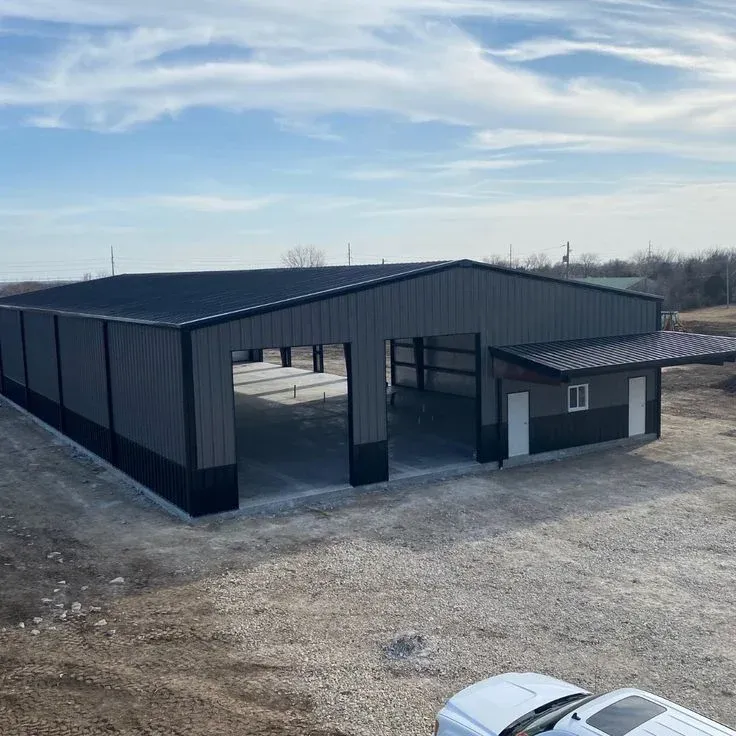
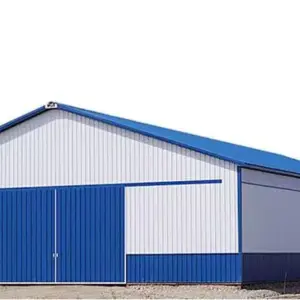
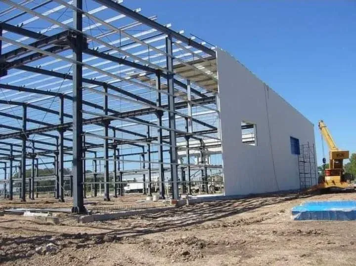
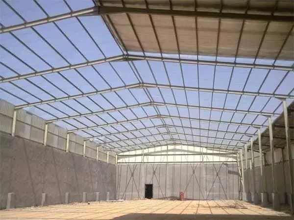
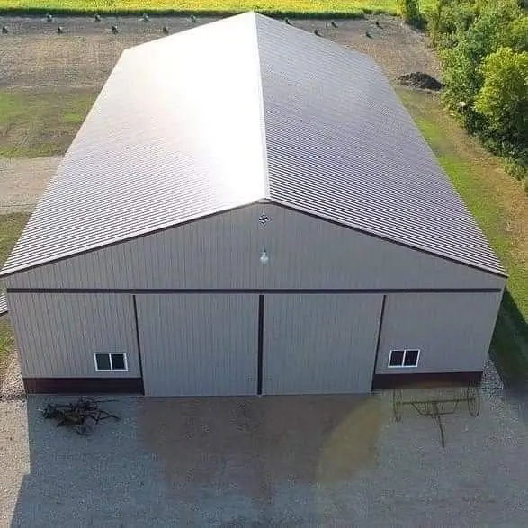
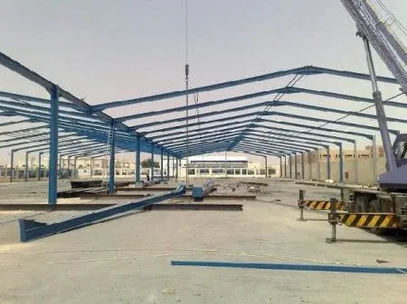
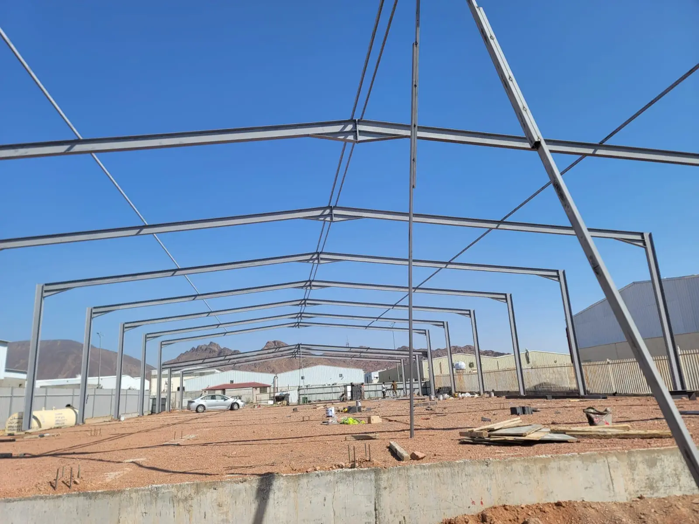
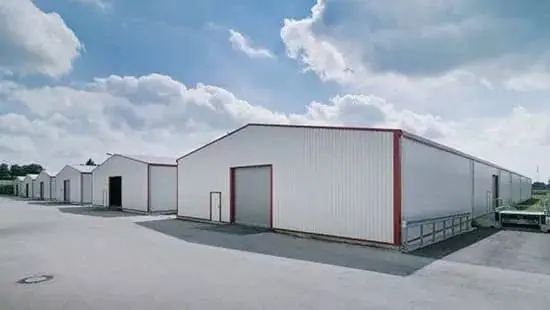

مساحة إنشائية تبدأ من حساب الحمل، لا من المتر المربع
قبل الحديث عن مساحة الهنجر بالمتر المربع، نسأل عن الاستخدام: تخزين خفيف، أم معدات ثقيلة ورافعات، أم ورشة تصنيع بحركة عمال يومية؟ الإجابة تحدد سماكة الأعمدة، نوع القواعد، وارتفاع السقف قبل أن نبدأ أي رسم هندسي. هذا الترتيب في التفكير هو ما يمنع مفاجآت التكلفة لاحقًا في منتصف التنفيذ.
الأنواع التي ننفذها
هناجر صناعية
هياكل فولاذية بامتداد واسع لورش التصنيع والتجميع، مصممة لتحمّل معدات ورافعات ثقيلة.

هناجر ومستودعات تجارية
مساحات تخزين منظمة للبضائع، بارتفاع سقف وعرض أبواب يناسب حركة الشاحنات والرافعات الشوكية.

هناجر زراعية
تغطية مساحات تخزين المحاصيل والأعلاف، مع تهوية مدروسة لمنع تراكم الرطوبة داخل الهنجر.
التصميم الهندسي المسبق
نموذج ثلاثي الأبعاد لحساب الأحمال الإنشائية وتوزيع الأعمدة قبل بدء أي تصنيع في الورشة.
استخدامات الهناجر والمستودعات
- المخازن التجارية: تخزين منظم للبضائع بحركة دخول وخروج سلسة.
- الورش والمصانع: مساحات إنتاج وتجميع تتحمل معدات ثقيلة.
- المزارع: تخزين الأعلاف والمحاصيل وإيواء المعدات الزراعية.
- مواقف المركبات والمعدات: تغطية كاملة للمعدات الثقيلة والشاحنات.



عوامل تحديد السعر
| العامل | أثره على السعر |
|---|---|
| مساحة وارتفاع الهنجر | يحدد كمية الحديد والقواعد الخرسانية المطلوبة |
| نوع الأحمال المتوقعة (تخزين خفيف أو معدات ثقيلة) | يحدد سماكة الأعمدة والكمرات الإنشائية |
| نوع التغطية (ألواح معدنية عادية أو معزولة) | العزل الحراري يرفع التكلفة لكنه يقلل تكييف الهواء لاحقًا |
| عدد وحجم الأبواب والفتحات | الأبواب الكبيرة الآلية أعلى تكلفة من الأبواب اليدوية البسيطة |
مراحل التنفيذ من التصميم حتى التسليم
- دراسة الاستخدام: تحديد طبيعة النشاط (تخزين، تصنيع، زراعة) لحساب الأحمال المطلوبة.
- التصميم الإنشائي: نموذج ثلاثي الأبعاد يوضح توزيع الأعمدة والكمرات قبل التصنيع.
- الحصول على التراخيص: نساعد في تجهيز المخططات اللازمة للجهات المختصة.
- التصنيع والتركيب: تنفيذ الهيكل والتغطية في الموقع وفق الجدول الزمني المتفق عليه.
- التسليم: فحص نهائي للسلامة الإنشائية وتسليم وثيقة الضمان.
معرض الصور الكامل — كل أعمالنا في الهناجر والمستودعات
مجموعة شاملة من الصور الفعلية لمشاريعنا المنفذة، اضغط أي صورة للتكبير والتنقل بالسهمين.



الضمان وخدمة ما بعد البيع
نقدّم ضمانًا يصل إلى 10 سنوات على الهياكل الفولاذية، مع متابعة دورية اختيارية لفحص وصلات اللحام والدهان الحراري، خصوصًا في المنشآت الكبيرة التي تتعرض لحركة تشغيلية يومية مكثفة.
نطاق تغطيتنا بجدة ومكة
ننفذ مشاريع الهناجر والمستودعات في المناطق الصناعية والزراعية حول جدة ومكة المكرمة، ونتعامل مع مشاريع بمختلف الأحجام من الورش الصغيرة إلى المستودعات التجارية الكبيرة.
صيانة الهناجر والمستودعات
المنشأة الكبيرة تحتاج جدول صيانة منتظم لا يقل أهمية عن جودة التصنيع الأولى:
- فحص دوري لوصلات اللحام والبراغي الإنشائية في الهيكل الفولاذي.
- إعادة الدهان الحراري لأي منطقة تظهر عليها علامات صدأ مبكرة.
- تنظيف مجاري تصريف مياه الأمطار على السقف قبل موسم الشتاء.
- فحص الأبواب الكبيرة وأنظمة الفتح للتأكد من سلاسة الحركة.
أسئلة يتكرر سؤالها حول الهناجر والمستودعات
كم يستغرق إنشاء هنجر متوسط المساحة؟+
من أسابيع إلى شهرين تقريبًا حسب المساحة وتعقيد التصميم، بدءًا من اعتماد المخططات وحتى التسليم النهائي.
هل الهيكل الفولاذي يحتاج ترخيصًا خاصًا؟+
نعم، ونساعدك في تجهيز المخططات اللازمة للحصول على التراخيص من الجهات المختصة قبل البدء بالتنفيذ.
هل يمكن إضافة عزل حراري لهنجر قائم بالفعل؟+
في أغلب الحالات نعم، عبر إضافة ألواح عازلة على الهيكل الخارجي أو من الداخل حسب طبيعة الاستخدام.
ما الفرق بين الهنجر والمستودع في التسمية؟+
غالبًا يُستخدم مصطلح الهنجر للمساحات المفتوحة الكبيرة، والمستودع للمساحات المخصصة للتخزين المنظم، وقد يتداخل الاستخدام حسب طبيعة المشروع.
ما مدة الضمان على الهياكل الفولاذية؟+
نقدّم ضمانًا يصل إلى 10 سنوات على التصنيع والتركيب حسب نوع المشروع ومواصفاته.
هل يمكن توسعة الهنجر مستقبلًا بعد بنائه؟+
في كثير من التصاميم نعم، إذا رُوعي ذلك عند التخطيط الأولي بترك امتدادات في الهيكل الإنشائي.
كيف يتم حساب الأحمال الإنشائية للهنجر؟+
نعتمد على نوع الاستخدام (تخزين خفيف أو معدات ثقيلة) وارتفاع السقف وعرض البحر الإنشائي لحساب سماكة الأعمدة والكمرات المطلوبة.
هل تقدمون خدمة الصيانة الدورية بعد التسليم؟+
نعم، نوفر خطط فحص دوري اختيارية لوصلات اللحام والدهان الحراري للمنشآت الكبيرة.
ما هي المواد المستخدمة في تغطية سقف الهنجر؟+
ألواح معدنية مجلفنة عادية أو معزولة حراريًا (ساندوتش بانل) حسب احتياج المشروع لدرجة العزل.
هل يناسب الهنجر الفولاذي مشاريع التبريد والتخزين الغذائي؟+
نعم مع إضافة عزل حراري مناسب وأنظمة تهوية وتبريد متخصصة تُصمم ضمن المخطط الإنشائي.
ما هي مدة صلاحية التراخيص المطلوبة لبناء هنجر؟+
تختلف حسب الجهة المانحة ونوع الاستخدام، ونساعد عملاءنا في فهم المتطلبات قبل بدء التنفيذ.